Game Boy · assembly · raster tricks
fsub: porting F-Zero to the Game Boy
fsub is an F-Zero-style racer for the original Game Boy that draws a bending perspective road, a moving city and seven rivals by rewriting three hardware registers on every scanline over a picture that never changes.
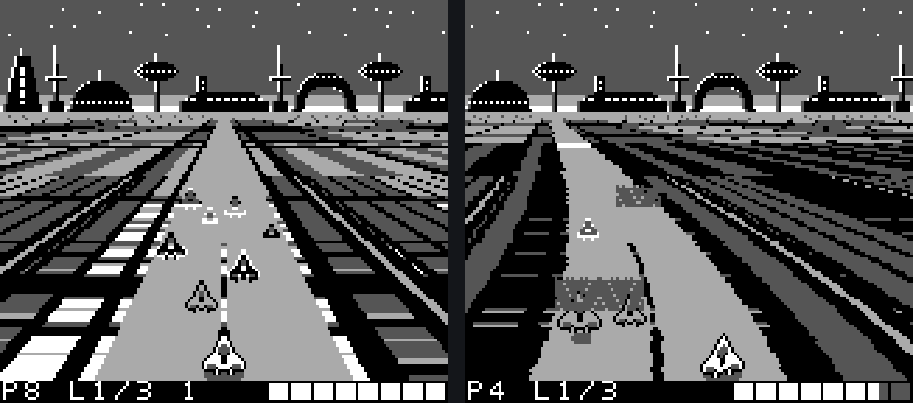
What fsub is
- F-Zero (SNES, 1990) was the showcase for Mode 7: a background layer the console itself rotates and scales, re-aimed on every scanline to fake a ground plane.
- The Game Boy (1989) has none of that. One background layer of 8x8 tiles, four shades of grey, 160x144 pixels, a 4.19 MHz 8-bit CPU with no multiply, and no way to draw a pixel directly.
- fsub is "F-Zero, sub-SNES": a from-scratch racer for that older machine, not a port of any SNES code. Bending road, a city streaming past, seven rivals in their own liveries, four tracks, a tunnel short cut, two-player link cable.
- It runs at 60 frames a second with no dropped frames. The repo's own playtest bots measured peak CPU load of 74-81% across all four tracks (8 full races, 0 drops).
- The whole game is a single assembly file of about 4,900 lines (
fzero.asm, RGBDS) plus Python scripts that generate every tile and lookup table. The ROM is 256 KB. - The one-sentence version of the trick: nothing in video memory moves; three registers (BGP, SCX, OBP1) are rewritten during every horizontal blank, and all the motion comes from that.
- Each section below is one technique, with a picture of what it does and a short "to reuse" recipe.
One picture that never moves
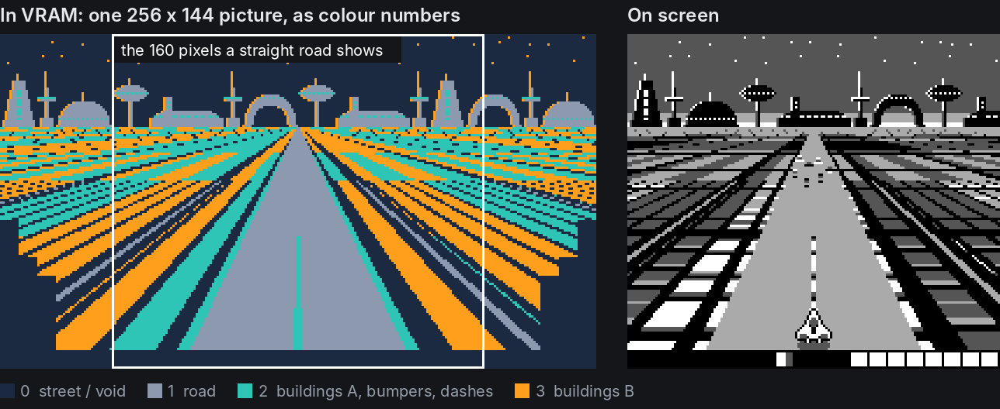
- Video memory holds a single 256x144 picture (32x18 tiles): a straight road running to a vanishing point with city blocks either side.
tools/gen_gfx.pydraws it at build time; the ROM copies it in once. - Checked against captured memory: across 260 frames spanning a full three-lap race, 0 bytes of tile data and 0 bytes of the background tilemap changed. Only the 20 status-bar cells of the window's map are ever rewritten (and one spare sprite tile during a wreck).
- The picture stores colour numbers, not shades. 0 is street or void, 1 is road, 2 is building set A (plus bumpers and centre dashes), 3 is building set B. What shade each number shows is decided separately on every scanline.
- Perspective is baked into the art. Ground row d (1 at the horizon, 104 at the bottom) shows the world at depth 16640 / d, sampled at 104 / d world units per pixel. Far rows are supersampled 7x and majority-voted so thin streets survive.
- The map is 256 pixels wide and the screen shows 160. The spare 96 are what the road slides into when it bends or the camera moves sideways.
- Tiles that can never scroll into view are simply not stored: the generator works out the furthest each row can slide and leaves the rest blank (the ragged dark corners in the picture).
- Division of labour for everything that follows: BGP (background palette) makes forward motion, SCX (horizontal scroll) makes bends and steering, OBP1 (a sprite palette) paints the rivals.
- To reuse: if the camera keeps a fixed pose over a ground plane, draw the plane once in perspective and animate it with per-line register writes. It needs a console that lets you change palette and scroll between scanlines, which most tile-based ones do.
Speed from palettes (BGP)
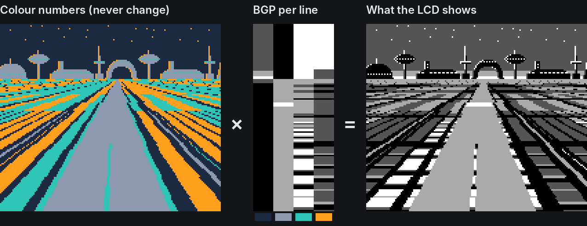
- BGP is one byte that says which of the four shades each colour number shows. Games normally set it once. fsub writes a different value on every scanline.
- The road (colour 1) keeps one shade all the way down. The two building colours (2 and 3) get a shade that depends on the line, so the same orange stripe in the tilemap is roof on one line, wall on the next and street after that.
- Each ground line has a fixed world depth, 16640 / d. The line's palette is one table read:
table[(distance driven + depth of this line) & 255]. - The table is a 256-unit strip of city along the direction of travel: 5 units of wall, 19 to 35 of roof, 8 of street, and a 24-unit cross avenue. Set B is staggered against set A so neighbouring blocks do not line up.
- Driving forward only changes "distance driven". Every line's index advances by the same amount, but near lines are a unit or two apart in depth and far lines are hundreds apart, so buildings crawl at the horizon and rush past at the bottom. Perspective motion falls out of an addition.
- Tables are page-aligned in ROM, so the index is just the low byte of the address:
ld a,c / add depth / ld l,a / ld a,[hl]. No multiply, no 16-bit maths. - The fill is unrolled by the Python generator into 96 copies of that snippet with each line's depth as a literal constant: about 9 machine cycles a line.
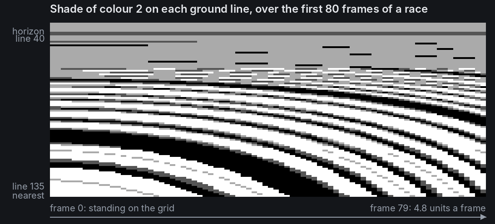
- Reading the space-time picture: each column is one frame, each row one scanline. Stripes are flat while the car waits on the grid, then tilt as it accelerates. Every stripe is a building travelling from the horizon to the camera. No tile was written to draw any of it.
| Band | Screen lines | Depth (units) | One table entry | Blur window |
|---|---|---|---|---|
| Near0 | 109-135 | 173-238 | 1 unit | none |
| Near1 | 89-108 | 241-333 | 1 unit | 5 |
| Near2 | 75-88 | 340-462 | 1 unit | 11 |
| Near3 | 65-74 | 475-640 | 1 unit | 21 |
| Far0 | 51-64 | 666-1387 | 16 units | avenues only |
| Far1 | 43-50 | 1513-4160 | 16 units | districts only |
| Far2 | 40-42 | 5547-16640 | static | haze |
- The bands are mip-mapping for palettes. Far lines skip so many units per line that a sharp table would shimmer, so each band further out reads a pre-blurred copy of the same strip, and the furthest count distance in steps of 16.
- Things painted across the road (finish line, dash plates, jump plates) are the same idea applied to colour 1: on the lines a stretch of track currently covers, two bits of that line's BGP are overwritten. No tiles, no sprites.
- Fades cost nothing per frame. Every table is stored with two darker copies straight after it, and the fade level is added to the table's page number.
- Scenery is nothing but a choice of tables. City, underpass, water and wheat fields all use the same tilemap; each band looks up the scenery of the stretch of track it is over, so a change of scenery arrives from the horizon.
- To reuse: decide which colour numbers animate, write a 1-D strip of what the world looks like along the travel axis, precompute each line's depth, and index with position + depth. The cost is one table read per scanline.
Bends from scroll (SCX)
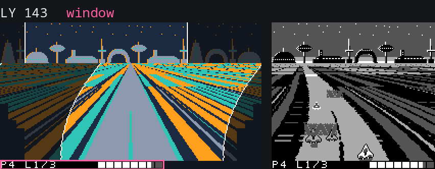
- SCX is the background's horizontal scroll. Like the palette, it is normally set once a frame; here every scanline gets its own value.
- The animation shows one real frame being drawn. Left: the tilemap, lit where the screen has read from it, with the current line's 160-pixel slice in orange. Right: the picture so far.
- The lit region is the "window" the screen cuts out of the map. On a straight it is a rectangle. In a bend it is a curved blade: each line starts reading a different number of pixels across.
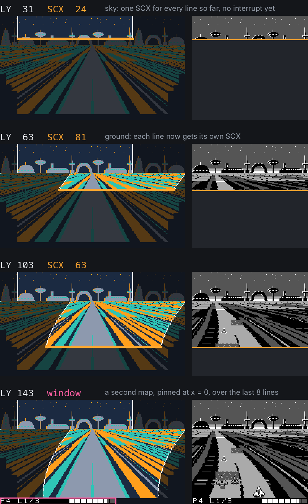
- Stills from the same frame (race frame 1620, a hard left). SCX is 24 for the whole sky, jumps to 98 on the first ground line, and eases back through 81 (line 63) and 63 (line 103) to 59 at the bottom. The last eight lines are not background at all (see the status bar section).
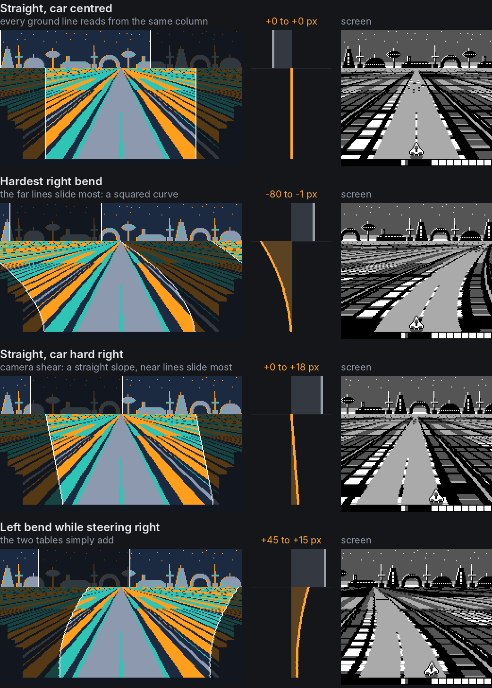
- The scroll is deliberately not linear. Two tables are added per line, and they have opposite shapes.
- Bend: zero at the bottom of the screen, largest at the horizon, falling off with the square of the distance up the screen. The near road stays under the car while the far end swings away, up to 80 pixels.
d = 1 at the horizon, 104 at the bottom
- Steering: the opposite. Moving the camera sideways slides near lines a lot and the horizon not at all, a straight slope. That is a shear, and it is all a sideways camera move is in this projection.
s = −20 … 20 pixels
- Both are precomputed: 65 bend tables and 45 shear tables of 104 bytes each (6,760 + 4,680 bytes). The camera uses the middle 41 shear tables; the outer four exist for the other player's car in link mode. Per frame the game picks a shear row and a bend row and adds them line by line, in one fully unrolled run of 96 lines.
- On a straight with no corner in sight, if neither the bend nor the camera has changed since a buffer was last filled, the fill is skipped. Each buffer keeps a two-byte note of what it was built for.
- The squared falloff is not exact perspective for a circular arc. It reads as a curve, costs one table, and keeps the bottom line still so the car never appears to slide.
- Past 48 pixels of bend the far rows wrap round the 256-pixel map. It shows only as one more street in the distant city (second row of the picture: the lit region leaves the left edge and comes back on the right).
- The camera follows the car half way and the sprite shows the rest, which keeps the picture inside the tile budget.
- Sprites have to agree with the bent road, so every rival and road object works out its screen x as
128 + lane offset on its line - SCX of that line, read from the buffer just built. - To reuse: split a camera move into per-line offsets and precompute each as a small table (levels x lines). Curvature wants far lines to move most; lateral camera motion wants near lines to move most. Add them and write the sum to the scroll register each line.
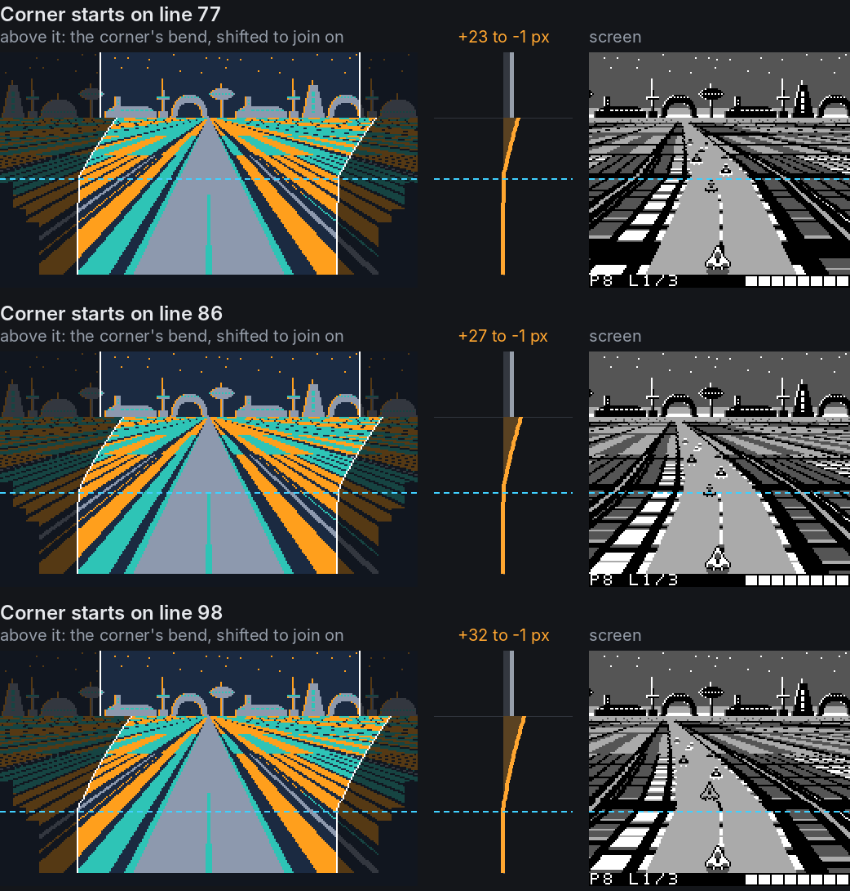
- Corners show up before they arrive. Looking up to eight chunks ahead, the game finds the first chunk whose bend differs from the one the car is in, and works out which screen line that boundary falls on.
- Lines beyond the boundary are drawn with the corner's bend and the rest with the bend the car is in. The far part is then shifted sideways by the difference between the two on the boundary line, so the pieces join. The result is a kink far up the road, a couple of seconds early, that comes down the screen as the car closes on it.
- The car feels only the bend of the chunk it is in, with no easing. All the warning is in the picture.
- It costs no loop logic. The 96-line fill is one unrolled run that ends in
ret, 6 bytes a line. To fill just the last n lines, the code pushes the address to come back to, works out the entry point n lines from the end, pushes that, and executesretto jump in. The shift that joins the far part on is a second unrolled run, 3 bytes a line, entered the same way. - To reuse: to draw two curves on one road, render each from its own table and offset the far one so the seam is continuous. Fully unrolled loops can serve any length if you can jump into the middle of them.
The skyline turns on the same layer
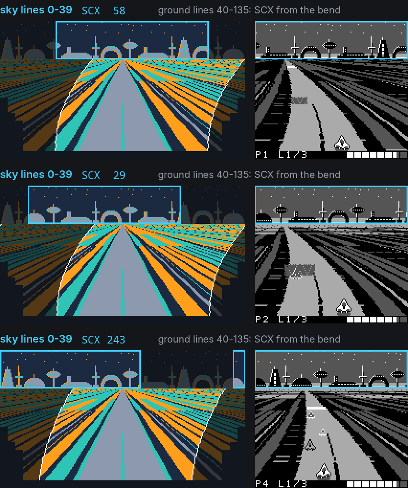
- It is not a second layer. The Game Boy has one background, and the skyline is simply the top 40 lines of the same tilemap the road is in (tile rows 0-4; the ground is rows 5-16).
- What makes it look separate is that those 40 lines get a different scroll from the 96 below. The sky's SCX is the high byte of a 16-bit "heading"; the ground's SCX comes from the bend and shear tables.
- Each frame the heading gains (bend - 32) x speed, scaled so that a 90-degree corner swings the skyline a quarter of its width round. So the skyline swings while you are in a corner, swings faster the faster you go, stops on a straight and stays where it stopped. It behaves like a compass, not like the road.
- The cyan box in the picture is the sky's slice of the map. Across the bend it slides from x = 58 to 29 to 243, wrapping off the left edge and back in on the right, while the ground's slice below barely moves.
- The wrap is seamless because the skyline is built from stamps whose widths add up to exactly 256 pixels: a full panorama.
- It is also the cheapest part of the frame. Lines 0-31 share one palette and one scroll, both loaded in VBlank, so no interrupt runs for them at all (next section).
- Lines 32-39 still share the sky's scroll but get their own palette per line: that is the glow that brightens toward the horizon.
- Each track loads its own skyline tiles into fixed "sky slots" and its own 40-line sky palette; the ground tiles never change between tracks.
- To reuse: parallax does not need layers. Any band of scanlines can have its own scroll; give the far band a slow accumulated value and the near band the fast one.
One frame, scanline by scanline
- A frame is 154 scanlines: 144 drawn and 10 of vertical blank. A line lasts 114 machine cycles, so the whole frame is 17,556. Everything the game does has to fit in that.
- The screen is divided into zones purely by when registers are written: sky (lines 0-39), ground (40-135), status bar (136-143). There is no other notion of "layers" in the road.
- The per-line handler is the most expensive thing in the program. Its common path is 54 cycles, nearly half a scanline, on every line it runs.
- The first version ran it on all 144 lines. That alone took about 40% of the CPU, peak load sat at 94-96% and frames were being dropped.
- The fix was to stop running it where the picture does not need it. The top 32 lines of sky share one palette and one scroll, so VBlank loads those once and arms only the LY = LYC interrupt, for line 31.
- That single LYC interrupt is the first of the frame. The handler notices it is on line 32's turn and switches the STAT interrupt source from "LY = LYC" to "HBlank" for the rest of the frame. VBlank switches it back.
- The LYC call fires at the start of line 31, not in its HBlank, so it loads line 32's values a line early. That is safe by construction: the generator makes palette entries 0 to 32 identical.
- Result from the commit that did it: peak load 94-96% down to 72-76% in single player, 98% down to 76-79% linked, and zero dropped frames again.
- Today the handler runs 114 times a frame (1 LYC + 113 HBlank), about 35% of all CPU time, computed from the instruction timings.
- To reuse: per-line interrupts are a tax on every line they fire on. Use LYC to start them only where per-line values begin, and let the handler re-arm itself.
The interrupt handler
; fzero.asm, common path (comments added)
SECTION "stat vector", ROM0[$48] ; the handler sits AT the vector: no jp
StatISR:
push af
push hl
ldh a, [rLY]
inc a
ld l, a ; L = the line about to be drawn
ldh a, [hFront]
ld h, a ; H = first page of the live buffer
ld a, [hl]
ldh [rBGP], a ; palette: forward motion
inc h
ld a, [hl]
ldh [rSCX], a ; scroll: bend and steering
inc h
ld a, [hl]
ldh [rOBP1], a ; sprite palette: rival paint
ld a, l
and %00011111 ; only lines 32 and 64 have extra work
jr z, .event
pop hl
pop af
reti- The handler computes nothing. It reads three bytes and writes three registers: 28 bytes of code, 54 machine cycles including the interrupt dispatch.
- Page-aligned tables are what make it that short. A line buffer is three consecutive 256-byte pages (BGP, SCX, OBP1). The line number is the low byte of the address and
inc h, one cycle, hops to the next register's table. No pointer maths, and onlyafandhlto save. - There are two such buffers (at $C100 and $C400). The main loop fills whichever is not on screen and posts its page number in
hReady. VBlank copies that tohFront. This is double buffering, for registers instead of pixels. - A half-built frame can never be shown. If the main loop runs long,
hReadyis still zero at VBlank and the previous frame's values are used again. - Sprites are staged in a RAM copy of OAM and sent by DMA in the same VBlank, so a frame's sprites and its palettes always land together.
- The handler lives at the interrupt vector itself ($0048) and runs straight on through the unused timer, serial and joypad vectors to $007F. That saves a 4-cycle
jpon each of 114 calls a frame. The price: those three interrupts can never be enabled. - Both once-a-frame jobs hide behind one test. Of the lines the handler sees, only 32 (switch STAT to HBlank) and 64 (switch tile block) need extra work, and both have five low zero bits, so
and %00011111 / jr zfinds them. The generator picks the split row to make that true and anASSERTguards it. - A DMG quirk is handled twice: writing STAT can itself raise a STAT interrupt. The mode switch checks it has not already been done, and the buffer keeps copies of line 0's values in entries 144-151 so a stray call during VBlank loads something harmless.
- With interrupts this sparse, waiting for VBlank needs care. The main loop checks its flag with interrupts off, then
ei+halt;eitakes effect one instruction late, so there is no gap in which VBlank can slip by and leave the CPU asleep until line 31. - A built-in load meter: when a frame's work is finished the main loop stores LY. The line the work ended on is the CPU load, and the headless playtest reads it every frame.
- To reuse: move every decision out of the per-line handler. Precompute a table per register, page-align them, index by line, double-buffer, and swap in VBlank.
The status bar is a window
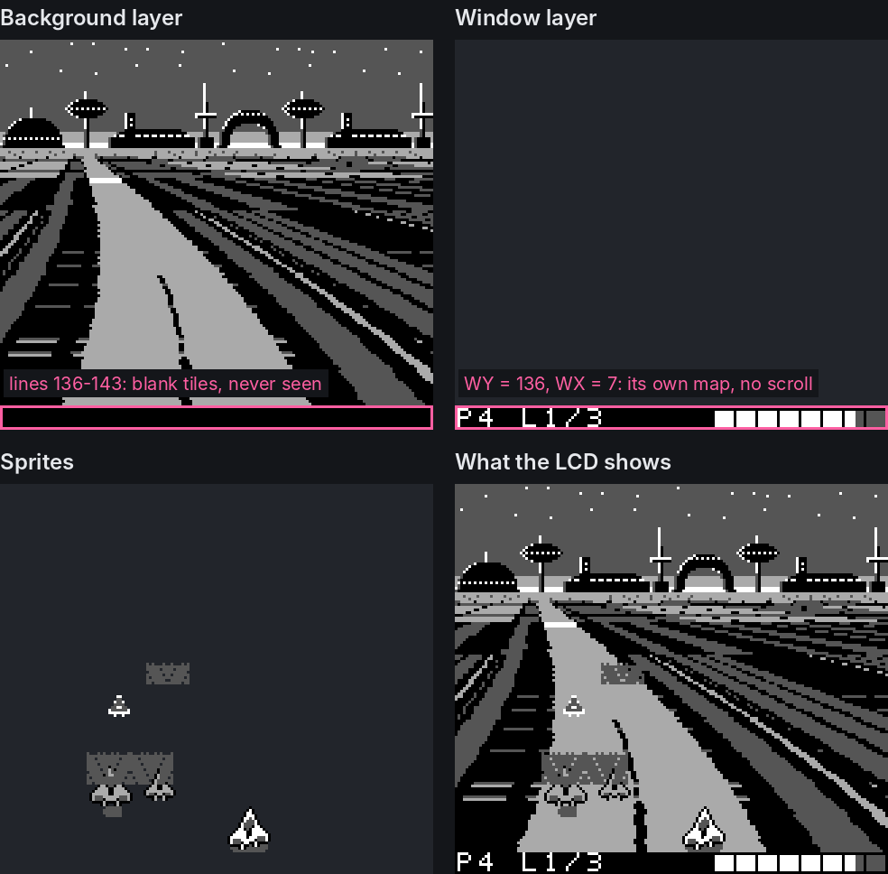
- The Game Boy's "window" is a second tilemap the hardware draws over the background from a chosen line (WY) and column (WX) onward. It has no scroll register: SCX does not touch it.
- fsub sets WY = 136 and WX = 7 once at boot. From line 136 the LCD stops reading the road's tilemap and reads 20 tiles from the window's map instead. No handler code is involved; the hardware compares LY with WY by itself.
- The picture is one captured frame taken apart: background (with its per-line scroll and palette), window, sprites, and the three together.
- Why it matters here: the status bar started life on the background, where it needed scroll and palette handling of its own.
- As a window it needs none, and the ground fill dropped from 104 lines to 96. The eight background lines under the bar are never seen, so the generator does not store tiles for them; the bar's digits took those tile slots.
- Its palette still comes from the line buffer. Entries 136-143 of the BGP page hold the bar's own palette, and a new lap flashes the bar in negative for two seconds by inverting those eight bytes on alternate 8-frame beats. No tile is rewritten for the flash.
- Updates are cheap by avoidance. The 20 tiles are staged in RAM and copied in VBlank only when a two-byte digest of everything the bar shows (place, lap, health, boosts, countdown) changes.
- To reuse: put anything that must not move in the window, start it at the line where your per-line effects end, and you have removed those lines from every per-frame loop.
Every-other-frame drawing
- After the interrupts take their 35%, the main loop has about 11,400 machine cycles a frame for everything else: physics, 96 palette lookups, 96 scroll sums, seven rivals, two road objects, the status bar, music and (in two-player) the link cable.
- Seven rivals at 60 Hz did not fit. So each rival is moved and redrawn only every other frame, covering two frames of travel in one step. Even-numbered cars go on even frames, odd on odd: the test is bit 0 of
frame XOR car number. - It works because a sprite stays where it is in OAM until someone moves it. A resting car costs nothing and simply holds its place for one more frame.
- Confirmed in captured OAM: cars 0, 2, 4, 6 change on one frame, cars 1, 3, 5 on the next, alternating throughout.
- It is not visible in play. A rival's motion on screen comes from its speed relative to yours, which is small for most of a race, so halving its update rate is hard to see.
- The one thing that cannot rest is paint. OBP1 values live in the line buffer, and the two buffers alternate, so a resting rival's paint is re-applied every frame from one remembered byte: the line its sprite sits on.
- The same idea, applied everywhere else in the frame:
- Depth order. Rivals are painted far to near so the nearer car's paint wins on shared lines. The order is maintained by comparing one neighbouring pair a frame, a bubble sort spread over time. It only changes when someone overtakes.
- Scenery. One of the seven distance bands is looked up per frame and the eighth frame checks for a roof. A change takes up to eight frames to settle, which is hidden because it arrives from the horizon anyway.
- Skip if unchanged. The scroll fill is skipped when bend and camera match the note left in that buffer. The sky's 40 palette lines are rewritten only for three frames after they change (enough to reach both buffers). The status bar is redrawn only when its digest changes.
- Explosion noise is redrawn every fourth frame.
- Sprites were budgeted the same way. A full-size rival is three sprites, not four (one piece of shadow under the middle), so seven rivals use 21 entries; with the player's 4 and two road objects' 10 that is 35 of the 40 the hardware has, with no flicker needed.
- Measured result on the current ROM: peak load 74-81% across the four tracks and no dropped frames.
- To reuse: ask of every job whether it needs 60 Hz. Stagger what can run at 30 Hz or slower, amortise sorting over frames, and remember what each buffer was built from so unchanged work can be skipped.
Liveries are palettes
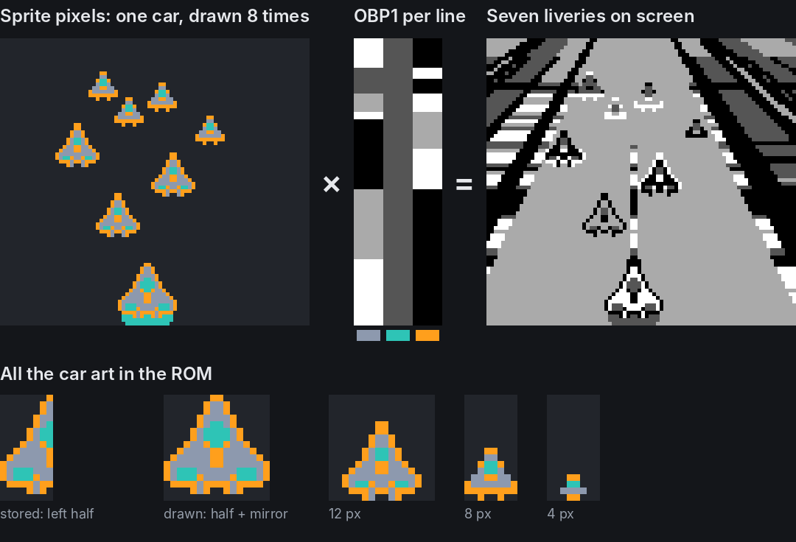
- The Game Boy gives sprites two palettes. The player's car uses OBP0, which is fixed. Every rival is flagged for OBP1, and OBP1 is the third register the per-line handler rewrites.
- So a rival's livery is not art. It is one byte written into the line buffer on the scanlines that car occupies. Seven liveries, one set of tiles, one palette register.
- Where two rivals overlap vertically, the shared scanlines take the nearer car's paint (they are painted far to near), so the further car shows the wrong livery on just those lines. That is the cost of the trick.
- Colour 2 stays dark grey in every livery so the shadow under each car still looks like a shadow.
- All the car art is half a car: one 8x16 sprite, drawn twice with the second copy mirrored. Leaning into a turn is free: the two halves are drawn one pixel apart vertically.
- Distant rivals use 12, 8 and 4-pixel versions that the Python generator makes by shrinking the same drawing with a majority vote that favours the outline.
- Boost pads and recharge patches reuse the trick: they are the dirt patch's tiles under an OBP1 value that flickers or pulses on their lines.
- To reuse: if palette registers can change per line, anything separated vertically can have its own colours. Sort by depth so overlaps resolve the way the eye expects.
384 tiles from a 256-tile background
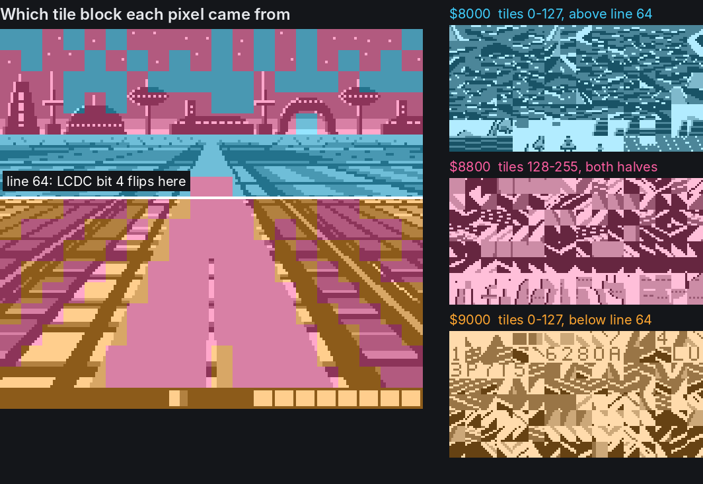
- A background tile number is one byte, so a picture can name 256 tiles. But one LCDC bit chooses whether numbers 0-127 are read from $8000 or from $9000 (128-255 always come from $8800).
- The per-line handler flips that bit at line 64. The top of the picture then draws from $8000 + $8800 and the bottom from $9000 + $8800: 384 tiles for one image.
- The generator sorts tiles by where they are used. Only above the split: $8000. Only below: $9000. Both: $8800. For the ground that is 94 + 128 + 96 tiles.
- What is left over, 36 slots in the upper and shared blocks, is where each track's skyline loads (the Neo City skyline uses all 36). Thirty tiles at the end of $8000 are kept for sprites, which cannot read the $9000 block. All 384 are spoken for.
- The menu's alphabet costs no tiles: it is loaded into the skyline's slots while the menu is up, and the generator emits a
CHARMAPsodb "TRACK"assembles straight to those tile numbers. - The split sits at line 64 because the handler can find that line with the same mask test it uses for line 32.
- To reuse: a mid-frame LCDC write buys 128 extra background tiles for any tall static picture. Let a script do the packing.
Scenery, tunnels and fades are palette tables
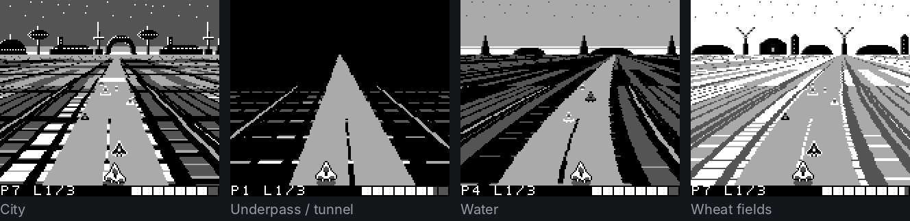
- The four pictures differ only in which palette tables the seven distance bands read (and, across tracks, the skyline tiles). The ground tilemap is byte-identical on all four tracks.
- Each chunk of the lap names a scenery. Each band looks up the scenery of the chunk it is over, so new scenery rolls in from the horizon rather than popping.
- The tunnel short cut is the same road with black walls and ribs of light sweeping past: another table set, plus the sky lines forced to black. Its entrance is a sprite that grows through three sizes as it approaches.
- Taking the tunnel runs a 64-frame fade: out, a switch of track branch half way while the screen is black, and back in. The fade is free: darker copies of every table sit on the following pages.
- To reuse: a new environment can be a new set of 256-byte tables rather than new art. Store fade steps as extra copies and select them by adding to the page number.
An explosion drawn into a tile
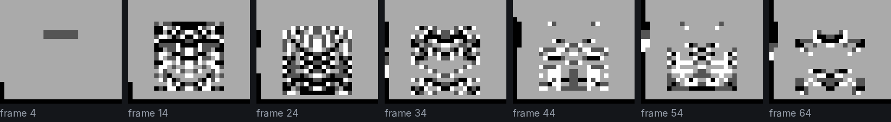
- This is the one place the game writes tile data during play. A wrecked car's sprite is pointed at a spare tile, and VBlank overwrites that tile's 32 bytes with noise.
- The noise is an 8-bit shift register (shift right, XOR with $B8 on carry). After the half-way point each byte is ANDed with a rotated copy of itself so the cloud thins, then it clears.
- A new frame of noise is written every fourth frame. The explosion is symmetrical because the car is: it is still one half-sprite and its mirror.
- The spare tile is the small shadow's; it is copied back from ROM when the next race starts.
- To reuse: procedural animation can live in a single tile. Point a sprite at it and rewrite a few bytes in VBlank.
A link cable with no interrupts
- Two-player mode does not share a simulation. Each console runs its own car and two rivals and tells the other where they are; the other draws them a few frames late. Your own car is never delayed by the cable.
- The serial port is polled, never interrupt-driven. A serial interrupt landing just before HBlank would delay the palette write and tear the picture, and its vector is under the HBlank handler anyway.
- Polling means calling
LinkPumpoften: after physics, once per distance band in the palette fill and twice in the scroll fill, once per rival, and after the status bar and the music. Linked consoles also skiphaltand keep pumping while they wait for VBlank. - The master leaves 2 ms between bytes so the other side has time to notice one and load the next. It measures the gap with the hardware timer used as a stopwatch: set the counter to 248 when a byte completes, and send the next one once a plain read shows it has wrapped. The timer interrupt stays off.
- Framing is self-healing. Data bytes carry 7 bits, so only the sync byte has bit 7 set and the slave re-aligns on it. A packet whose 7-bit checksum is wrong is dropped; 180 frames without a good one drops the link.
- The player's position goes in every packet and that console's two rivals alternate, one per packet.
- The other player is not in a lane, so its x has to be scaled for perspective. The camera's shear tables already hold x * d / 104 for every line, so they are reused as a multiplication table. They are generated two steps wider than the camera needs so they reach a car right at the rail, and a build-time assert keeps it that way.
- One bit in the sync byte flips when a player restarts the race; the other console sees the flip and restarts too. The console that pressed Start chooses the track and the other loads it.
- It is tested without hardware:
tools/linktest.cruns two SameBoy cores joined by an emulated cable and checks that each console sees the other where it really is. - To reuse: when one interrupt has a hard deadline, do not add a second. Poll everything else from known points in the main loop, and use a free-running timer as a stopwatch rather than as an interrupt source.
Python writes the tables, bots check the budget
- Almost nothing in the ROM is hand-typed data.
tools/gen_gfx.pydraws the road, the four skylines, the car and its smaller copies, and writes every per-line table. The assembly only includes the results. - It writes code too. The 96 unrolled palette lookups, each with its line's depth as a literal, are a macro the generator emits into
consts.inc. Change the perspective constant and the art, the tables and that code all move together. - Budgets are checked at build time. If a skyline needs more tiles than there are free slots, the build stops with the numbers.
- A track is a 512-byte block: bend, rival pace, hazards, scenery and crosswind for each of 64 chunks. It is copied into RAM when chosen, so the game code reads fixed addresses whatever the track.
- Tracks are written as straights and corners:
("S", 6), ("R", 16, 1)and so on. The generator refuses a lap that is not 64 chunks, does not turn exactly once round, or puts opposite corners back to back without a straight. - Rival pace is not hand-tuned per corner.
gen_tracks.pyworks out how fast a good driver can take each corner from its bend and length, using the game's own push formula, and runs the field flat out on the straights. tools/playtest.jsruns whole races headless at three skill levels and reports place, lap times, hits, peak load and dropped frames. "Zero dropped frames" in this post means that check: the game's frame counter advanced by exactly one on every emulated frame.- The figures in this post come from the same route. A script dumps RAM, VRAM and OAM from the emulator and redraws each layer from the line buffers; that redraw matched the emulator's own picture pixel for pixel on 260 frames of a race. Most were captured from the October 9 build (9ca59dc); the tracks have since been redrawn as straights and corners, and the corner figure comes from that newer build (f01cb09).
- To reuse: generate tables, and the unrolled code that reads them, from one script. Put a load meter in the game and let scripted players read it in a headless emulator on every change.
Screenshot gallery
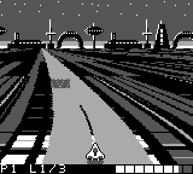
- Above: 4.7 seconds of Neo City, the left-hander onto the causeway over the water, taken from the emulator (every second frame of 280).
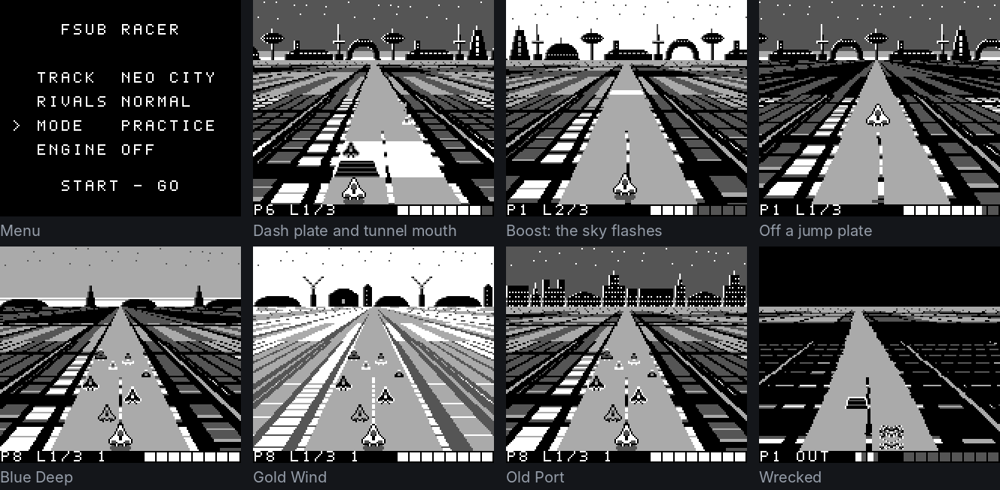
- Menu: white lettering loaded into the skyline's tile slots.
- Dash plate and tunnel mouth: the white band is two palette bits on the lines that stretch of road covers; the ramp is a sprite.
- Boost: the sky's 40 palette lines swap to a white table for a few frames.
- Jump: the car rises off its shadow, which stays on the road and shrinks.
- Blue Deep, Gold Wind, Old Port: same ground tilemap, different skyline tiles and palette tables.
- Wrecked: the car's sprite is the noise tile; the status bar reads OUT.
Code map
| Technique | Where to read it |
|---|---|
| Per-line handler, self re-arming | fzero.asm:167 StatISR |
| Buffer swap, sprite DMA, status bar copy, explosion tile | fzero.asm:216 VBlankISR |
Frame loop, ei + halt wait, load meter | fzero.asm:813 MainLoop |
| Palette fill, scroll fill, skip-if-unchanged | fzero.asm:886 BuildLines; macros FILL_BAND, FILL_LINE |
| Corner kink, jumping into an unrolled run part way | fzero.asm:1125 CornerAhead, fzero.asm:1221 GroundEntry, fzero.asm:1259 GroundLines |
| Unrolled per-line code and depth constants | tools/gen_gfx.py:175 row_phase, emitted as FILL_ALL_BANDS |
| Scenery, one band a frame | fzero.asm:1285 UpdateScene |
| Paint across the road (finish line, plates) | fzero.asm:2388 RoadFeatures, fzero.asm:2555 RoadBand |
| Rivals on alternate frames, paint, one-pair sort | fzero.asm:1471 UpdateRivals |
| Road objects placed from a line's SCX | fzero.asm:2008 UpdateObject |
| Skyline heading, physics | fzero.asm:3464 Drive |
| Status bar digest | fzero.asm:2667 UpdateHud |
| Link cable: polling, packets | fzero.asm:2975 LinkPump, fzero.asm:3086 BuildPacket, fzero.asm:3182 LinkApply |
| Perspective tilemap, palette strips, bend and shear tables | tools/gen_gfx.py:93 ground_row, tools/gen_gfx.py:149 pal_tables, tools/gen_gfx.py:367 bend_tables, tools/gen_gfx.py:602 shear_tables |
| Packing 384 tiles, sky slots | tools/gen_gfx.py:739 build |
| Tracks as straights and corners, rival pace | tools/gen_tracks.py:48 course, tools/gen_tracks.py:151 corner_speed, tools/gen_tracks.py:178 block |
| Playtest bots, link test | tools/playtest.js, tools/linktest.c |
| Browser build | web/index.html, deploy-web.sh |
- Line numbers are for commit
f01cb09. - Every figure here was captured from the running ROM; the scripts that made them, and the source of this page, are in the repo's
makingfsub/folder.